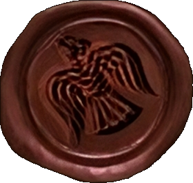

Дайте волю своєму почуттю пригоди та пориньте в захопливий світ скандинавської історії та легенд. Nordic - це віртуальний портал, який оживляє старовинні та епічні часи вікінгів та їх величезного впливу на культуру та цивілізацію Скандинавії та світу.
Завітайте до нашого сайту та дізнайтеся більше про вікінгів – сміливих воїнів, неперевершених мореплавців і кмітливих купців. Ви знайдете захоплюючі розповіді про їхні величні подвиги, відкриєте таємниці їхніх міфів та легенд, а також поглибите свої знання про скандинавську географію, культуру, мистецтво та архітектуру.
Наш сайт пропонує різноманітні розділи, які відповідають інтересам всіх любителів вікінгів і Скандинавії. Ви зможете оглянути колекцію цікавих артефактів, збережених з того часу та дізнатися багато нового про релігію, міфологію та обряди вікінгів. Зануртесь у віртуальну подорож у часі, де кожен куток нашого вебсайту буде переносити вас у захопливі події минулого.
Ми працюємо, щоб поділитися з вами усім, що ми знаємо про скандинавську спадщину та вікінгів, тому наш сайт постійно оновлюється. Запрошуємо вас відчути ту енергію та силу, яку передає нам Північ. З Nordic ви станете частиною легендарної спадщини Скандинавії та вікінгів, де кожен дотик до історії пробудить ваші почуття пригоди.
Готуйтеся до захоплюючої подорожі!
З повагою, адміністрація порталу.